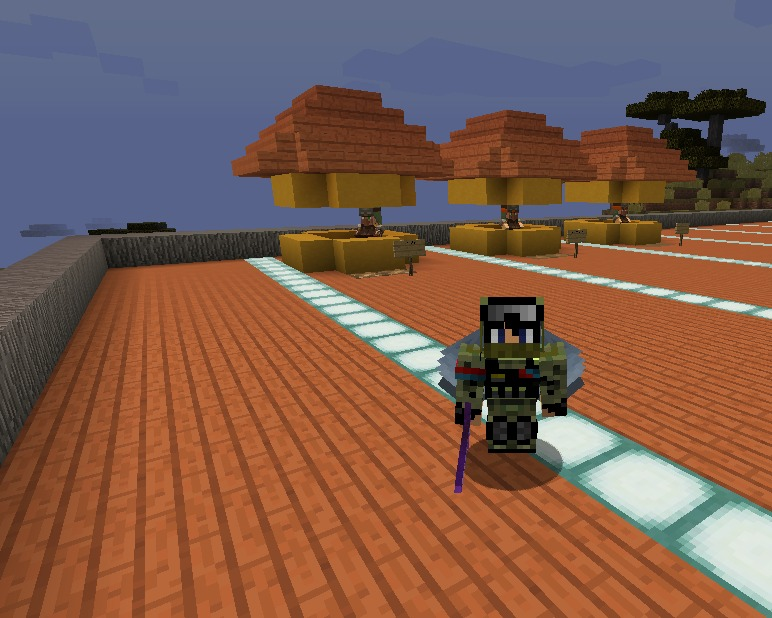
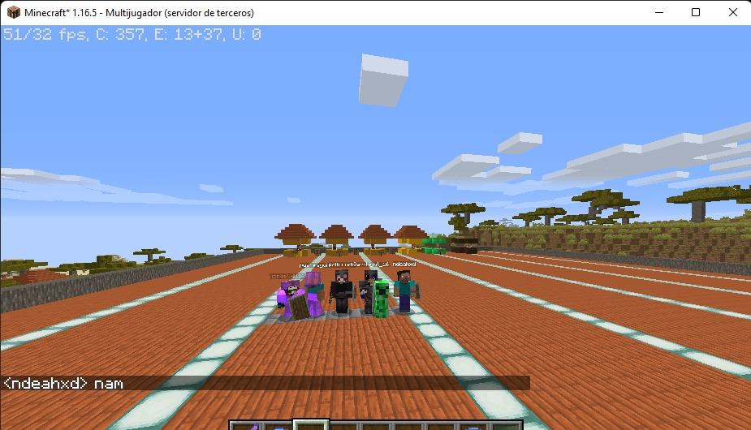
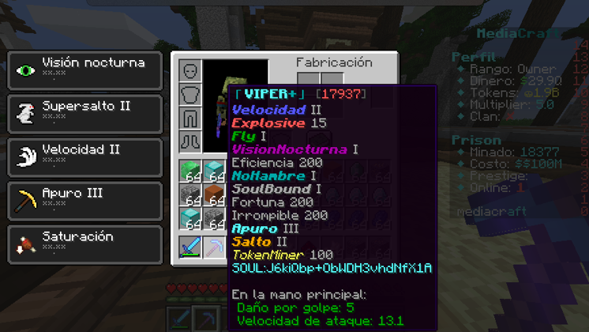
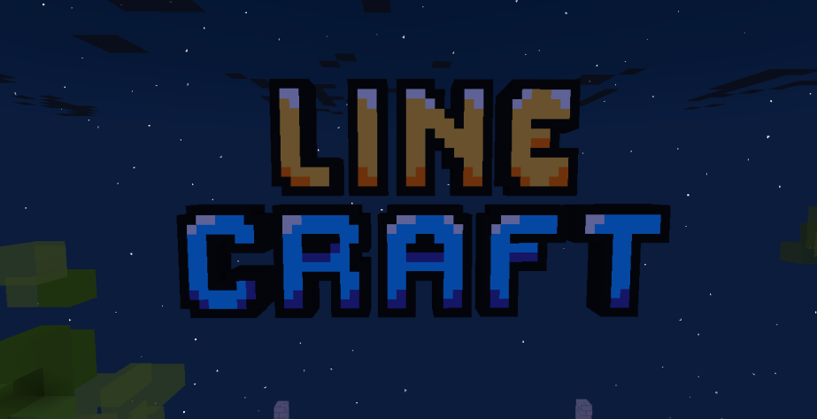

Mincraft
Este fue mi primer server hecho en aternos fue hecho con
plugins, sin contar la ayuda de nadie, contaba con una mina,
y una tienda.
Fue creado el 10 de marzo del 2022, me inspire en mi server
que habia cerrado, se llamaba Habilnet.
Mincraft2
Fue una copia de mincraft, aternos borro nuestro server
(teniamos una copia del mundo) y lo volvimos hacer.
Esta ves tuvimos server de discord, y mas apoyo de la gente.
El server pasaba prendido
El server pasaba prendido 8 horas por que me quedaba en el,
como tenia clases virtuales tenia la pc prendida casi todo el rato.
Mediacraft
Fue un server prisonop, Este fue un trabajo para un amigo,
contaba con 27 minas enumeradas de abecedario, A, b, ect...
Tenia encantamientos ops, crates, koth y un evente de chat
el server era 1.8.9 como los demas servers prisonop, estaba
hosteado en starnode fue hecho el 07/05/2022.
linecraft
Linecraft es mi network en proceso, sin duda va hacer
mi mejor network que e construido, cuenta con una modalidad hecha
y varias que esperan a hacer configuradas, se espera a que sean
varias modalidades, la que queremos son bedwar, anarquico, skywar,
paintbatle, y mas modalidades con plugins modalidades creados por
Ajned97 Que para mi son muy interesantes.
Linecraft esta hosteado en una propia vps de 64gb de ram y 64 cores.
se estima que la duracion de mantenimiento de linecraft va hacer
un mes.
